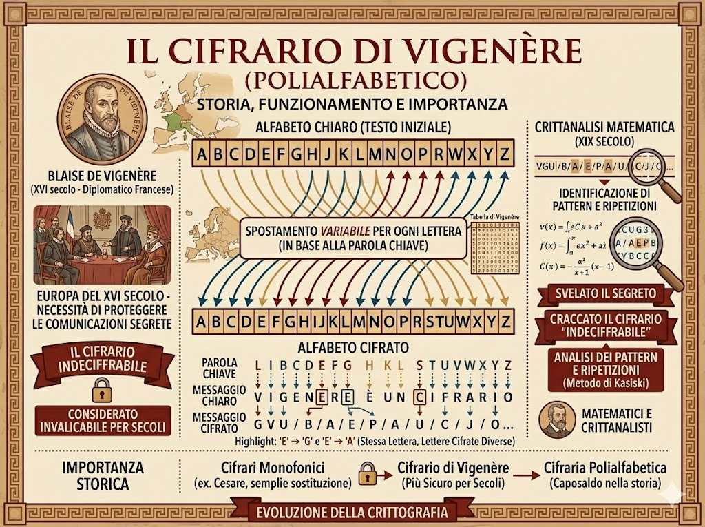
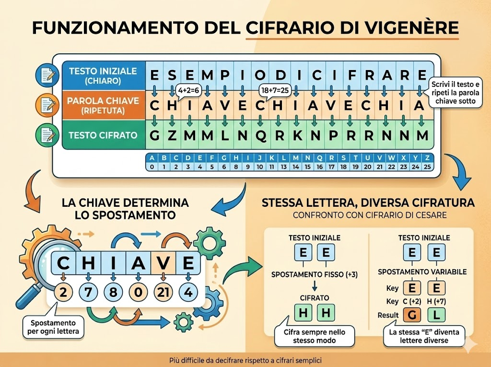
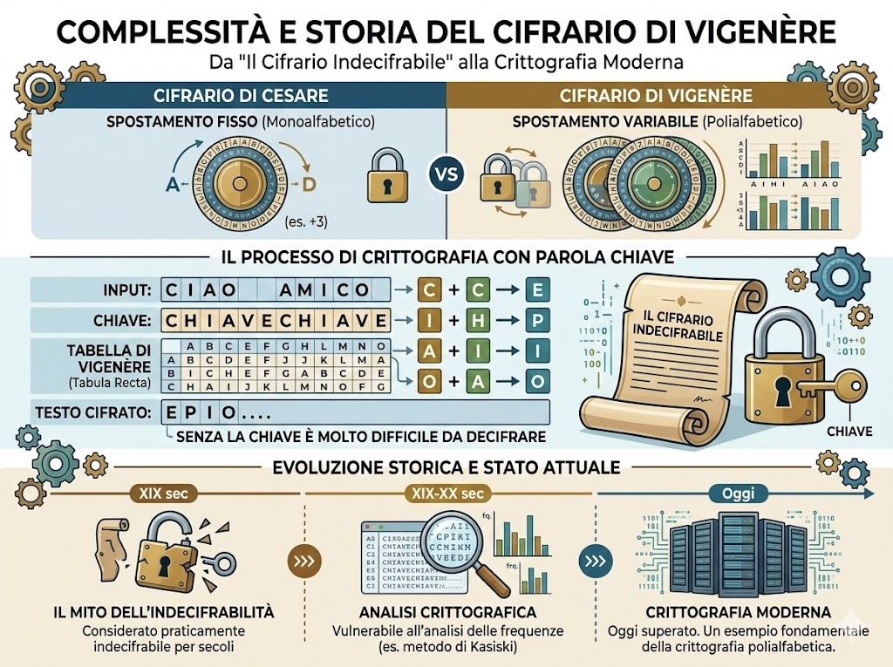

Il Cifrario di Vigenère è un metodo di crittografia sviluppato nel XVI secolo e considerato per molto tempo uno dei sistemi di cifratura più sicuri. Prende il nome dal diplomatico francese Blaise de Vigenère, anche se idee simili erano state proposte già da altri studiosi in precedenza. Questo cifrario nacque in un periodo in cui governi e diplomazie europee avevano sempre più bisogno di proteggere le comunicazioni segrete. Il funzionamento del Cifrario di Vigenère si basa sull’uso di una parola chiave che determina come cifrare il messaggio. Ogni lettera del testo viene trasformata utilizzando uno spostamento diverso dell’alfabeto, basato sulle lettere della parola chiave. In questo modo la stessa lettera del messaggio originale può diventare lettere diverse nel testo cifrato, rendendo la decifrazione più difficile rispetto ai cifrari più semplici. Per molti anni questo sistema fu considerato molto sicuro e venne chiamato “il cifrario indecifrabile”. Tuttavia nel XIX secolo furono sviluppati metodi matematici che permisero di analizzarlo e decifrarlo. Nonostante ciò, il Cifrario di Vigenère rimane un esempio molto importante nella storia della crittografia.

Il cifrario di Vigenère funziona utilizzando una parola chiave per cifrare un messaggio. Prima si scrive il testo da cifrare e sotto di esso si ripete la parola chiave tante volte quanto necessario per coprire tutte le lettere del messaggio. Ogni lettera del testo viene poi spostata nell’alfabeto di un numero di posizioni determinato dalla lettera corrispondente della chiave. Ad esempio, se la chiave è “chiave”, ogni lettera del messaggio verrà cifrata usando lo spostamento indicato dalla lettera della chiave che si trova sotto di essa. In questo modo la stessa lettera del testo originale può essere trasformata in lettere diverse nel messaggio cifrato, rendendo il sistema più difficile da decifrare rispetto a cifrari più semplici come quello di cesare.

Una curiosità del cifrario di Vigenère è che per molti anni è stato considerato praticamente indecifrabile, tanto da essere soprannominato “il cifrario indecifrabile”. La sua complessità rispetto al cifrario di Cesare nasce dall’uso della parola chiave, che permette di variare lo spostamento delle lettere e rendere il testo molto più difficile da decifrare senza conoscerla. Oggi non è più sicuro di fronte ai moderni metodi di analisi crittografica, ma rimane uno degli esempi più importanti nella storia della crittografia e viene ancora studiato per capire i principi dei cifrari polialfabetici.
